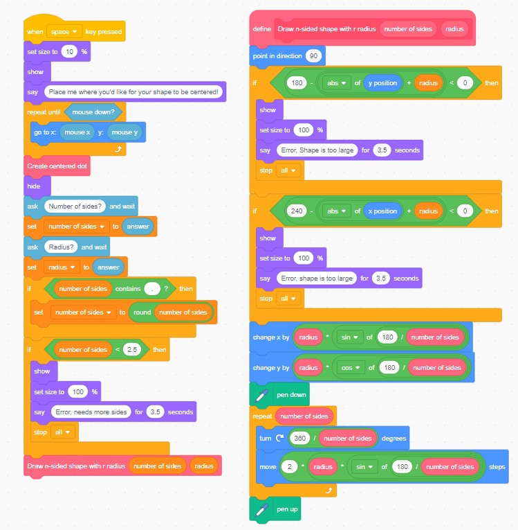
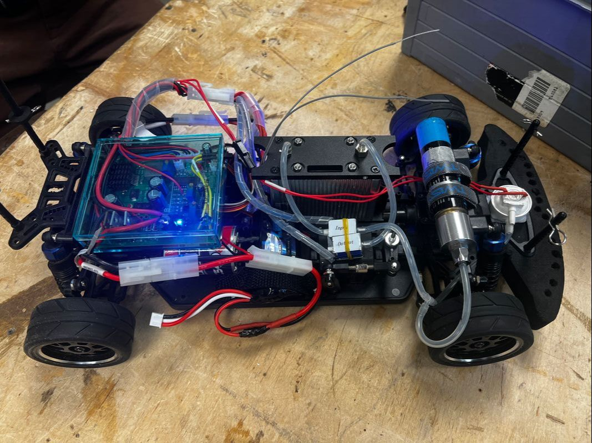
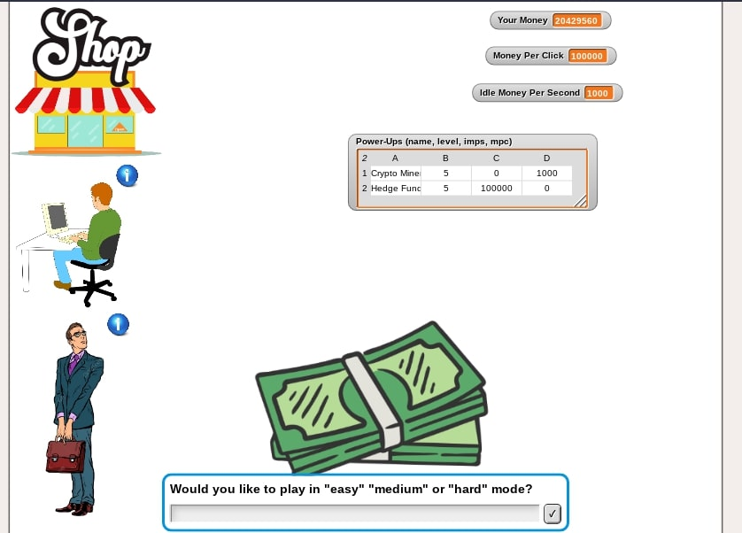

For this project I created my own game using code in scratch. The project plays as any whack-a-mole game where I coded moles to pop up at random intervals. I also added features where there are multiple game mode times and the player earns more points the earlier they click the mole. This was my first project using block coding and I learned a lot about the process of coding in general and all of the different challenges in the coding process and how to overcome them.

Polygon Generator App
Code in Scratch
For this project I coded a polygon generator in Scratch. I used mathematical formulas and coding in order to create a generator that can create a polygon given an input of any number of sides and any radius. Some features that had to be coded in were that the user can pick the location with a mouse click, shapes are centered around point clicked, error checking for non-whole number side numbers and number of sides less than 3, and error checking for drawing going off screen.

Hydrogen RC Car Team
Link to Race Website
My team and I built a car from a given kit to compete in the Horizon Educational Grand Prix. We were given a kit as a starting point, and learned the ins and outs of all things about a hydrogen RC car. We learned how any car works with the servo, motor, and other pieces. Also, we learned how a hydrogen cell works in order to produce energy just from water - a very cool concept that can be very useful for sustainability in the future.
First we built the car out of the box with no modifications. Starting our modifications, we took out unnecessary metal plates and the drive shaft to reduce weight. We also added holes for slightly more weight reduction. Since we removed the plates, we were able to rearrange the car and have a lower center of mass, attempting to keep cords close enough together while also keeping weight reduction roughly even on the left and right. We also changed some parts like the battery from NiMh to Li-ion as Li-ion is more efficient for an endurance race. We also added telemetry so we could know when voltage was getting low and hydrostiks or batteries needed to be changed. Furthermore, we changed wheels to be better quality so they wouldn't break if we got in a big crash while racing. Lastly we painted the shell.
The final piece of the project was to actually race the car in a two hour endurance race and attempt to qualify for the California State Championships. Although we gave it a valiant effort, difficulties with our hydrogen system meant we were knocked out of the competition. However, we created a guide for future students to use when doing this project.

Money Maker Matrix Game
Code in Snap
For this project I created my own game using code in snap The project was used for the AP CSP create assignment in my Computer Science Class. It is just like any other clicker game where you click to get money, allowing you to buy power-ups that increase how much money you make. Play it below!
Below is a video demonstration of the game in action!
STEAM Outreach
This was a group project where myself and a team of seven other students created a solar-powered car kit for elementary school students. We took the pieces of a motor, solar panel, and wheels from another kit and made it into a new kit that elementary schoolers could easily construct and desconstruct and could be used to teach them about renewable energy. My individual piece of the project was to create the motor holder. I designed the pieced in fusion and 3D printed it twenty times.
Here is the slideshow we gave to the elementary students that explained the different pieces of the project and my motor mount in Fusion 360: